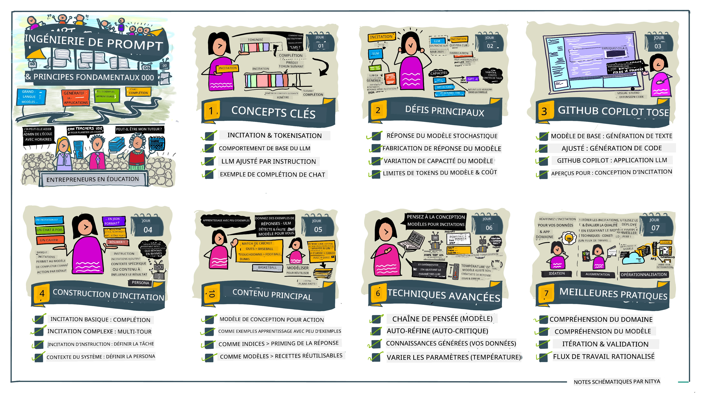
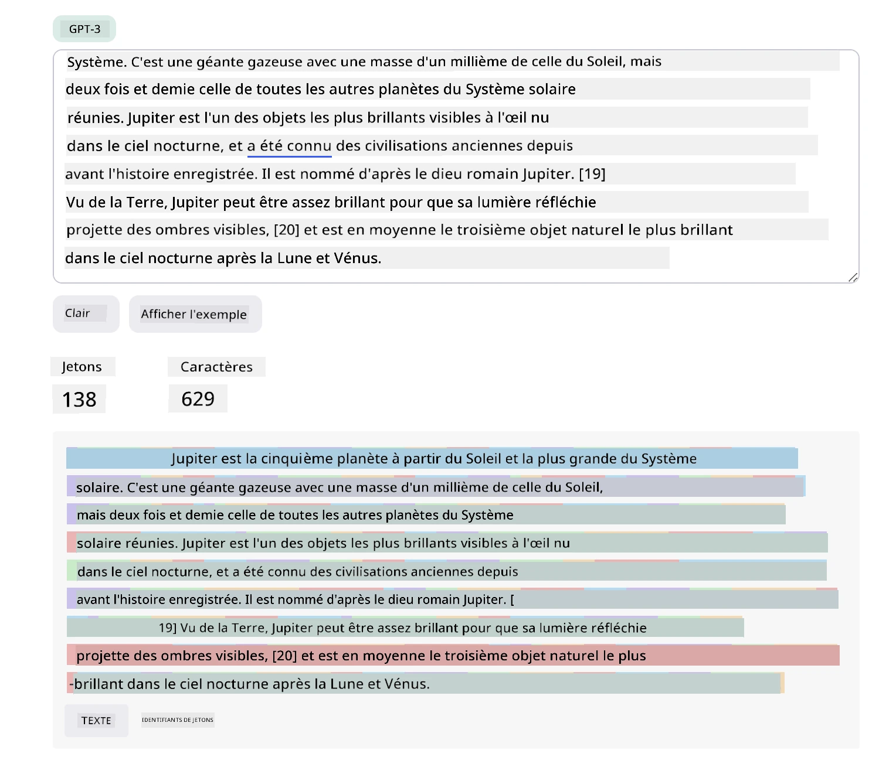
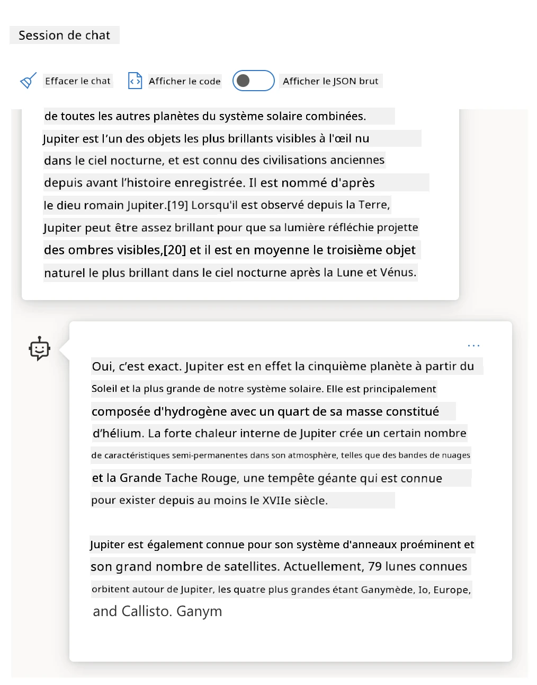
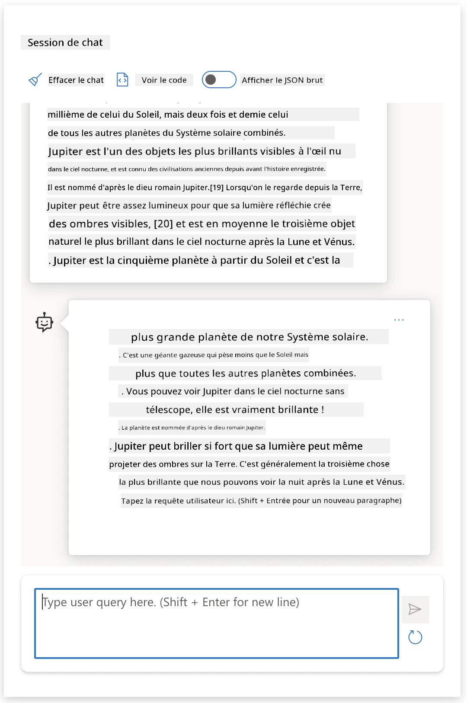
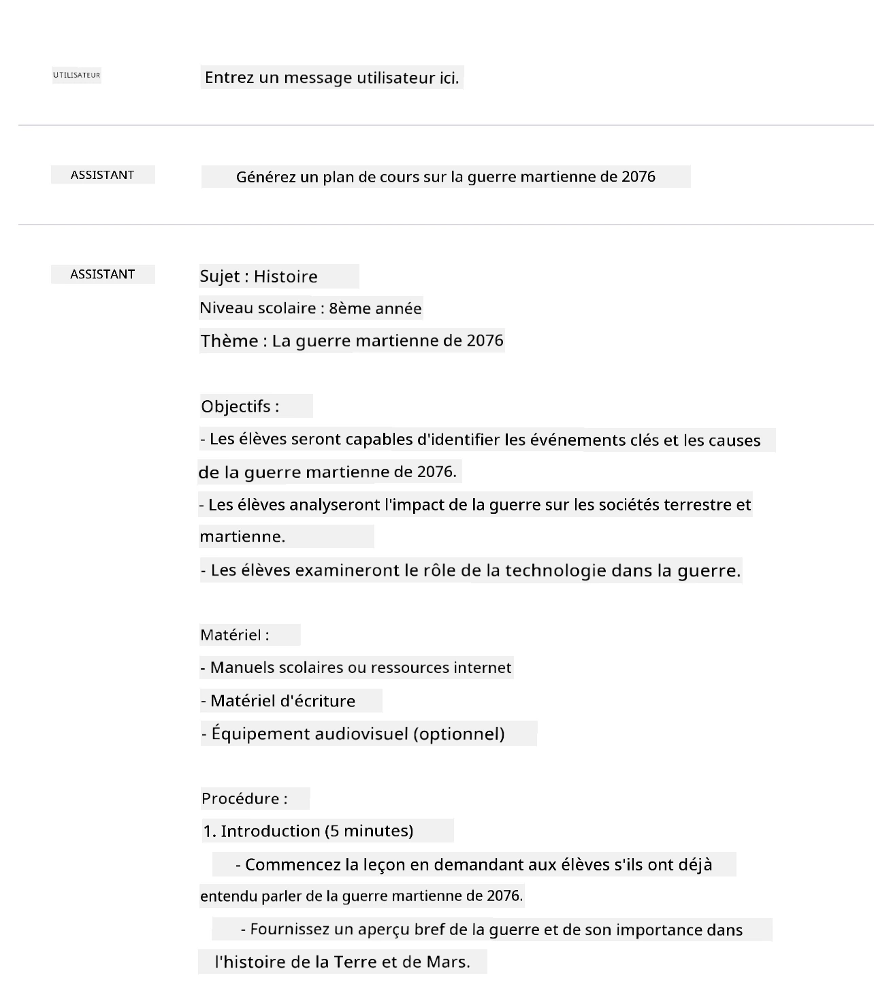
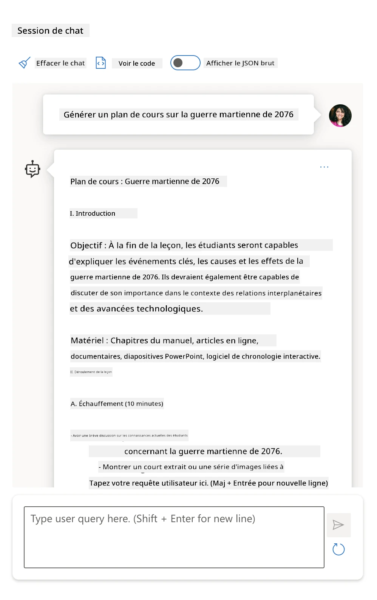
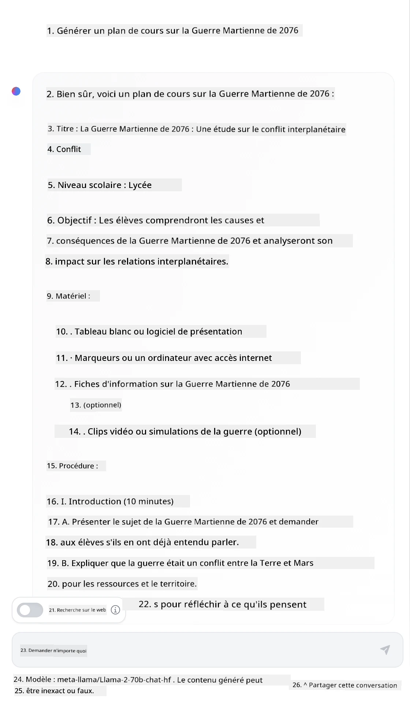

Fondamentaux de l'Ingénierie des Prompts#
Introduction#
Ce module couvre les concepts et techniques essentiels pour créer des prompts efficaces dans les modèles d'IA générative. La façon dont vous rédigez votre prompt pour un LLM est également importante. Un prompt soigneusement conçu peut obtenir une meilleure qualité de réponse. Mais que signifient exactement les termes prompt et ingénierie des prompts ? Et comment puis-je améliorer le contenu du prompt que j’envoie au LLM ? Ce sont les questions auxquelles nous tenterons de répondre dans ce chapitre et le suivant.
L’IA générative est capable de créer du contenu nouveau (par exemple, texte, images, audio, code, etc.) en réponse aux demandes des utilisateurs. Elle y parvient en utilisant des modèles de langage étendus comme la série GPT d’OpenAI ("Generative Pre-trained Transformer") qui sont entraînés à utiliser le langage naturel et le code.
Les utilisateurs peuvent désormais interagir avec ces modèles via des paradigmes familiers comme le chat, sans nécessiter d’expertise technique ou de formation. Les modèles sont basés sur des prompts - les utilisateurs envoient une saisie textuelle (prompt) et reçoivent en retour la réponse de l’IA (complétion). Ils peuvent ensuite "dialoguer avec l’IA" de manière itérative, en conversations multi-tours, affinant leur prompt jusqu’à ce que la réponse corresponde à leurs attentes.
Les "prompts" deviennent maintenant l’interface principale de programmation pour les applications d’IA générative, indiquant aux modèles ce qu’ils doivent faire et influençant la qualité des réponses retournées. L’"ingénierie des prompts" est un domaine d’étude en plein essor qui se concentre sur la conception et l’optimisation des prompts pour fournir des réponses cohérentes et de qualité à grande échelle.
Objectifs d'apprentissage#
Dans cette leçon, nous apprendrons ce qu’est l’ingénierie des prompts, pourquoi elle est importante, et comment nous pouvons concevoir des prompts plus efficaces pour un modèle donné et un objectif d’application. Nous comprendrons les concepts de base et les meilleures pratiques pour l’ingénierie des prompts – et découvrirons un environnement interactif "sandbox" Jupyter Notebooks où nous pouvons voir ces concepts appliqués à des exemples concrets.
À la fin de cette leçon, nous serons capables de :
- Expliquer ce qu’est l’ingénierie des prompts et pourquoi elle est importante.
- Décrire les composants d’un prompt et comment ils sont utilisés.
- Apprendre les meilleures pratiques et techniques pour l’ingénierie des prompts.
- Appliquer les techniques apprises à des exemples réels, en utilisant un endpoint OpenAI.
Termes clés#
Ingénierie des Prompts : La pratique de concevoir et affiner les entrées pour guider les modèles d’IA vers la production des sorties désirées.
Tokenisation : Le processus de conversion du texte en unités plus petites, appelées tokens, que le modèle peut comprendre et traiter.
LLMs instruits par instruction : Modèles de langage étendus (LLMs) qui ont été affinés avec des instructions spécifiques pour améliorer la précision et la pertinence des réponses.
Environnement de Travail Sandbox#
L’ingénierie des prompts est actuellement plus un art qu’une science. La meilleure façon d’améliorer notre intuition est de pratiquer davantage et d’adopter une approche par essais et erreurs qui combine l’expertise du domaine d’application avec les techniques recommandées et les optimisations spécifiques aux modèles.
Le Jupyter Notebook accompagnant cette leçon fournit un environnement sandbox où vous pouvez essayer ce que vous apprenez – en temps réel ou dans le cadre du défi de code à la fin. Pour exécuter les exercices, vous aurez besoin :
- D’une clé API Azure OpenAI - le point de terminaison du service pour un LLM déployé.
- D’un environnement Python - dans lequel le Notebook peut être exécuté.
- De variables d’environnement locales - complétez maintenant les étapes du SETUP pour être prêt.
Le notebook propose des exercices démarreurs – mais vous êtes encouragé à ajouter vos propres sections Markdown (description) et Code (requêtes de prompt) pour essayer plus d’exemples ou d’idées – et développer votre intuition pour la conception de prompts.
Guide Illustré#
Vous souhaitez avoir une vue d'ensemble de ce que cette leçon couvre avant de plonger ? Consultez ce guide illustré, qui vous donne un aperçu des principaux sujets abordés et des points clés à retenir pour chacun. La feuille de route de la leçon vous conduit de la compréhension des concepts et défis fondamentaux à leur résolution par des techniques et meilleures pratiques d’ingénierie des prompts pertinentes. Notez que la section "Techniques avancées" dans ce guide fait référence au contenu couvert dans le chapitre suivant de ce cursus.

Notre Startup#
Parlons maintenant de la manière dont ce sujet se rapporte à la mission de notre startup de promouvoir l’innovation par l’IA dans l’éducation. Nous voulons construire des applications d’IA pour un apprentissage personnalisé – alors réfléchissons à la façon dont différents utilisateurs de notre application pourraient "concevoir" des prompts :
- Les administrateurs pourraient demander à l’IA d’analyser les données du programme pour identifier des lacunes dans la couverture. L’IA peut résumer les résultats ou les visualiser avec du code.
- Les enseignants pourraient demander à l’IA de générer un plan de cours pour un public cible et un sujet donné. L’IA peut construire le plan personnalisé dans un format spécifié.
- Les étudiants pourraient demander à l’IA de les aider dans une matière difficile. L’IA peut maintenant guider les étudiants avec des leçons, indices et exemples adaptés à leur niveau.
Ce n’est que la partie émergée de l’iceberg. Découvrez Prompts For Education - une bibliothèque open source de prompts sélectionnés par des experts de l’éducation - pour avoir une idée plus large des possibilités ! Essayez d’exécuter certains de ces prompts dans le sandbox ou en utilisant le OpenAI Playground pour voir ce qui se passe !
Qu’est-ce que l’Ingénierie des Prompts ?#
Nous avons commencé cette leçon en définissant l’Ingénierie des Prompts comme le processus de conception et d’optimisation des entrées textuelles (prompts) pour fournir des réponses cohérentes et de qualité (complétions) pour un objectif d’application et un modèle donnés. On peut considérer cela comme un processus en deux étapes :
- concevoir le prompt initial pour un modèle et un objectif donnés
- affiner le prompt de façon itérative pour améliorer la qualité de la réponse
C’est nécessairement un processus par essais et erreurs qui demande de l’intuition et des efforts de la part de l’utilisateur pour obtenir des résultats optimaux. Alors, pourquoi est-ce important ? Pour répondre à cette question, il nous faut d’abord comprendre trois concepts :
- Tokenisation = comment le modèle "voit" le prompt
- LLMs de base = comment le modèle fondation "traite" un prompt
- LLMs instruits par instruction = comment le modèle peut désormais "voir des tâches"
Tokenisation#
Un LLM voit les prompts comme une séquence de tokens où différents modèles (ou versions d’un même modèle) peuvent tokenizer un même prompt de différentes manières. Comme les LLMs sont entraînés sur des tokens (et non sur du texte brut), la façon dont les prompts sont tokenisés impacte directement la qualité de la réponse générée.
Pour avoir une intuition du fonctionnement de la tokenisation, essayez des outils comme le OpenAI Tokenizer montré ci-dessous. Copiez votre prompt - et voyez comment il est converti en tokens, en faisant attention à la façon dont les espaces et la ponctuation sont traités. Notez que cet exemple montre un LLM plus ancien (GPT-3) - alors essayer avec un modèle plus récent peut donner un résultat différent.

Concept : Modèles Fondations#
Une fois un prompt tokenisé, la fonction principale du "Base LLM" (ou modèle fondation) est de prédire le token suivant dans cette séquence. Comme les LLMs sont entraînés sur d'énormes ensembles de données textuelles, ils ont une bonne compréhension des relations statistiques entre les tokens et peuvent faire cette prédiction avec un certain degré de confiance. Notez qu’ils ne comprennent pas le sens des mots dans le prompt ou le token ; ils ne voient qu’un schéma qu’ils peuvent "compléter" avec leur prédiction suivante. Ils peuvent continuer à prédire la séquence jusqu’à ce que l’utilisateur arrête ou qu’une condition préétablie soit remplie.
Vous voulez voir comment fonctionne la complétion basée sur un prompt ? Saisissez le prompt ci-dessus dans le Chat Playground d’Azure OpenAI avec les réglages par défaut. Le système est configuré pour traiter les prompts comme des demandes d’informations - vous devriez donc voir une complétion qui correspond à ce contexte.
Mais que se passe-t-il si l’utilisateur veut voir quelque chose de spécifique qui répond à des critères ou à un objectif de tâche ? C’est ici que les LLMs instruits par instruction entrent en jeu.

Concept : LLMs instruits par instruction#
Un LLM instruit par instruction commence avec le modèle fondation et l’affine avec des exemples ou des paires entrée/sortie (par exemple, des "messages" multi-tours) qui contiennent des instructions claires – et la réponse de l’IA tente de suivre ces instructions.
Cela utilise des techniques comme l’apprentissage par renforcement avec retour humain (RLHF) qui peuvent entraîner le modèle à suivre des instructions et apprendre des retours pour produire des réponses mieux adaptées aux applications pratiques et plus pertinentes par rapport aux objectifs des utilisateurs.
Essayons – reprenez le prompt ci-dessus, mais changez maintenant le message système pour fournir l’instruction suivante comme contexte :
Résumez le contenu fourni pour un élève de CE1. Limitez le résultat à un paragraphe avec 3 à 5 points clés.
Voyez comme le résultat est désormais ajusté pour refléter l’objectif et le format souhaités ? Un enseignant peut maintenant directement utiliser cette réponse dans ses diapositives pour cette classe.

Pourquoi avons-nous besoin de l’Ingénierie des Prompts ?#
Maintenant que nous savons comment les prompts sont traités par les LLMs, parlons du pourquoi de l’ingénierie des prompts. La réponse vient du fait que les LLMs actuels posent un certain nombre de défis qui rendent les complétions fiables et cohérentes plus difficiles à obtenir sans mettre d’efforts dans la construction et l’optimisation des prompts. Par exemple :
-
Les réponses des modèles sont stochastiques. Le même prompt produira probablement des réponses différentes avec différents modèles ou versions de modèle. Et il peut même produire des résultats différents avec le même modèle à des moments différents. Les techniques d’ingénierie des prompts peuvent nous aider à minimiser ces variations en fournissant de meilleures balises.
-
Les modèles peuvent fabriquer des réponses. Les modèles sont pré-entraînés avec des ensembles de données grands mais finis, ce qui signifie qu’ils manquent de connaissances sur des concepts hors de ce champ d’entraînement. En conséquence, ils peuvent produire des complétions incorrectes, imaginaires ou directement contradictoires aux faits connus. Les techniques d’ingénierie des prompts aident les utilisateurs à identifier et limiter ces fabrications, par exemple en demandant à l’IA des citations ou un raisonnement.
-
Les capacités des modèles varient. Les modèles ou générations plus récents auront des capacités riches mais présenteront aussi des particularités et compromis uniques en termes de coût et de complexité. L’ingénierie des prompts peut nous aider à développer des meilleures pratiques et des workflows qui abstraient ces différences et s’adaptent aux exigences spécifiques du modèle de façon évolutive et transparente.
Voyons cela en action dans le OpenAI ou Azure OpenAI Playground :
- Utilisez le même prompt avec différents déploiements LLM (par exemple, OpenAI, Azure OpenAI, Hugging Face) - avez-vous vu des variations ?
- Utilisez plusieurs fois le même prompt avec le même déploiement LLM (par exemple, Azure OpenAI playground) - comment ces variations diffèrent-elles ?
Exemple de Fabrications#
Dans ce cours, nous utilisons le terme "fabrication" pour désigner le phénomène où les LLMs génèrent parfois des informations factuellement incorrectes à cause de limitations dans leur entraînement ou d’autres contraintes. Vous avez peut-être aussi entendu ce phénomène appelé "hallucinations" dans des articles populaires ou des articles de recherche. Cependant, nous recommandons fortement d’utiliser le terme "fabrication" afin de ne pas anthropomorphiser ce comportement en lui attribuant une caractéristique humaine. Cela renforce également les directives d’IA responsable d’un point de vue terminologique, en éliminant des termes qui peuvent être perçus comme offensants ou non inclusifs dans certains contextes.
Vous voulez vous faire une idée de ce que sont les fabrications ? Pensez à un prompt qui demande à l’IA de générer du contenu sur un sujet inexistant (pour s’assurer qu’il ne figure pas dans l’ensemble d’entraînement). Par exemple – j’ai essayé ce prompt :
Prompt : générez un plan de cours sur la guerre martienne de 2076. Une recherche sur le web m’a montré qu’il existait des récits fictifs (par exemple, séries télévisées ou livres) sur des guerres martiennes – mais aucun en 2076. Le bon sens nous dit aussi que 2076 est dans le futur et ne peut donc pas être associé à un événement réel.
Alors que se passe-t-il lorsque nous exécutons cette invite avec différents fournisseurs de LLM ?
Réponse 1 : OpenAI Playground (GPT-35)

Réponse 2 : Azure OpenAI Playground (GPT-35)

Réponse 3 : : Hugging Face Chat Playground (LLama-2)

Comme prévu, chaque modèle (ou version de modèle) produit des réponses légèrement différentes grâce au comportement stochastique et aux variations de capacité des modèles. Par exemple, un modèle cible un public de 4e tandis qu’un autre suppose un étudiant de lycée. Mais les trois modèles ont généré des réponses qui pourraient convaincre un utilisateur non informé que l’événement était réel.
Les techniques d’ingénierie des invites comme le métaprompting et la configuration de la température peuvent réduire dans une certaine mesure les fabrications du modèle. De nouvelles architectures d’ingénierie des invites intègrent également de nouveaux outils et techniques de manière fluide dans le déroulement de l’invite, pour atténuer ou réduire certains de ces effets.
Étude de cas : GitHub Copilot#
Terminons cette section en ayant une idée de la manière dont l’ingénierie des invites est utilisée dans des solutions réelles en examinant une étude de cas : GitHub Copilot.
GitHub Copilot est votre « programmeur assistant IA » : il convertit des invites textuelles en suggestions de code et est intégré dans votre environnement de développement (par exemple, Visual Studio Code) pour une expérience utilisateur fluide. Comme documenté dans la série de blogs ci-dessous, la première version était basée sur le modèle OpenAI Codex – avec les ingénieurs constatant rapidement le besoin de peaufiner le modèle et de développer de meilleures techniques d’ingénierie des invites pour améliorer la qualité du code. En juillet, ils ont lancé un modèle IA amélioré qui va au-delà de Codex pour des suggestions encore plus rapides.
Lisez les articles dans l’ordre pour suivre leur parcours d’apprentissage.
- Mai 2023 | GitHub Copilot comprend mieux votre code
- Mai 2023 | À l’intérieur de GitHub : travailler avec les LLM derrière GitHub Copilot
- Juin 2023 | Comment écrire de meilleures invites pour GitHub Copilot
- Juillet 2023 | .. GitHub Copilot dépasse Codex avec un modèle IA amélioré
- Juillet 2023 | Guide du développeur pour l’ingénierie des prompts et les LLM
- Sep 2023 | Comment construire une application LLM d’entreprise : leçons de GitHub Copilot
Vous pouvez aussi parcourir leur blog d’ingénierie pour plus d’articles comme celui-ci qui montre comment ces modèles et techniques sont appliqués pour piloter des applications concrètes.
Construction de l’invite#
Nous avons vu pourquoi l’ingénierie des invites est importante – comprenons maintenant comment les invites sont construites pour pouvoir évaluer différentes techniques de conception d’invites plus efficaces.
Invite de base#
Commençons par l’invite de base : une entrée textuelle envoyée au modèle sans autre contexte. Voici un exemple – lorsque nous envoyons les premiers mots de l’hymne national américain à l’API Completion d’OpenAI, il complète instantanément la réponse avec les lignes suivantes, illustrant le comportement de base de prédiction.
| Invite (Entrée) | Complétion (Sortie) |
|---|---|
| Oh say can you see | On dirait que vous commencez à chanter les paroles de "The Star-Spangled Banner", l’hymne national des États-Unis. Les paroles complètes sont ... |
Invite complexe#
Ajoutons maintenant un contexte et des instructions à cette invite de base. L’API Chat Completion nous permet de construire une invite complexe sous forme de collection de messages comprenant :
- paires entrée/sortie reflétant la saisie de l’utilisateur et la réponse de l’assistant.
- message système définissant le contexte du comportement ou de la personnalité de l’assistant.
La requête prend maintenant la forme ci-dessous, où la tokenisation capture efficacement les informations pertinentes du contexte et de la conversation. Changer le contexte système peut avoir autant d’impact sur la qualité des complétions que les entrées utilisateur fournies.
response = openai.chat.completions.create(
model="gpt-3.5-turbo",
messages=[
{"role": "system", "content": "You are a helpful assistant."},
{"role": "user", "content": "Who won the world series in 2020?"},
{"role": "assistant", "content": "The Los Angeles Dodgers won the World Series in 2020."},
{"role": "user", "content": "Where was it played?"}
]
)
Invite d’instruction#
Dans les exemples ci-dessus, l’invite utilisateur était une simple requête textuelle pouvant être interprétée comme une demande d’information. Avec les invites d’instruction, on peut utiliser ce texte pour spécifier une tâche plus en détail, fournissant ainsi une meilleure orientation à l’IA. Voici un exemple :
| Invite (Entrée) | Complétion (Sortie) | Type d’instruction |
|---|---|---|
| Écrire une description de la Guerre de Sécession | a retourné un simple paragraphe | Simple |
| Écrire une description de la Guerre de Sécession. Fournir les dates clés et événements et décrire leur importance | a retourné un paragraphe suivi d’une liste des dates clés des événements avec leurs descriptions | Complexe |
| Écrire une description de la Guerre de Sécession en 1 paragraphe. Fournir 3 points clés avec les dates clés et leur importance. Fournir 3 autres points clés avec les figures historiques importantes et leurs contributions. Retourner le résultat sous forme de fichier JSON | retourne des détails plus étendus dans une zone de texte formatée en JSON que vous pouvez copier-coller et valider selon besoin | Complexe. Formaté. |
Contenu principal#
Dans les exemples ci-dessus, l’invite restait assez ouverte, permettant au LLM de décider quelle partie de son ensemble de données pré-entraînées était pertinente. Avec le schéma de conception contenu principal, le texte d’entrée est divisé en deux parties :
- une instruction (action)
- un contenu pertinent (qui influence l’action)
Voici un exemple où l’instruction est de « résumer ceci en 2 phrases ».
| Invite (Entrée) | Complétion (Sortie) |
|---|---|
| Jupiter est la cinquième planète à partir du Soleil et la plus grande du Système solaire. C’est une géante gazeuse avec une masse équivalente à un millième de celle du Soleil, mais deux fois et demie celle de toutes les autres planètes du Système solaire réunies. Jupiter est l’un des objets les plus brillants visibles à l’œil nu dans le ciel nocturne et est connue depuis les civilisations anciennes bien avant l’histoire enregistrée. Elle doit son nom au dieu romain Jupiter.[19] Vue de la Terre, Jupiter peut être suffisamment brillante pour que sa lumière réfléchie projette des ombres visibles,[20] et c’est en moyenne le troisième objet naturel le plus brillant dans le ciel nocturne après la Lune et Vénus. Résumez ceci en 2 courtes phrases |
Jupiter, la cinquième planète à partir du Soleil, est la plus grande du Système solaire et est connue comme l’un des objets les plus brillants dans le ciel nocturne. Nommée d’après le dieu romain Jupiter, c’est une géante gazeuse dont la masse est deux fois et demie celle de toutes les autres planètes du Système solaire réunies. |
Le segment de contenu principal peut être utilisé de diverses façons pour guider des instructions plus efficaces :
- Exemples – au lieu de dire au modèle quoi faire avec une instruction explicite, donnez-lui des exemples de ce qu’il doit faire et laissez-le en déduire le schéma.
- Indices – suivez l’instruction par un « indice » qui prépare la complétion, guidant le modèle vers des réponses plus pertinentes.
- Modèles – ce sont des « recettes » répétables pour les invites avec des espaces réservés (variables) pouvant être personnalisées avec des données pour des cas d’usage spécifiques.
Explorons ces techniques en action.
Utiliser des exemples#
C’est une approche où vous utilisez le contenu principal pour « nourrir le modèle » avec des exemples de la sortie désirée pour une instruction donnée, et le laissez inférer le schéma pour la sortie voulue. En fonction du nombre d’exemples fournis, on peut avoir une invite zéro-shot, one-shot, few-shot, etc.
L’invite se compose maintenant de trois éléments :
- une description de la tâche
- quelques exemples de la sortie désirée
- le début d’un nouvel exemple (qui devient une description implicite de la tâche)
| Type d’apprentissage | Invite (Entrée) | Complétion (Sortie) |
|---|---|---|
| Zéro-shot | « The Sun is Shining ». Traduire en espagnol | « El Sol está brillando ». |
| One-shot | « The Sun is Shining » => « El Sol está brillando ». « It's a Cold and Windy Day » => |
« Es un día frío y ventoso ». |
| Few-shot | Le joueur est passé par les bases => Baseball Le joueur a fait un service gagnant => Tennis Le joueur a frappé un six => Cricket Le joueur a réussi un dunk => |
Basketball |
Remarquez que nous avons dû fournir une instruction explicite (« Traduire en espagnol ») dans l’invite zéro-shot, mais elle est déduite dans l’exemple one-shot. L’exemple few-shot montre comment l’ajout de plusieurs exemples permet aux modèles de faire des inférences plus précises sans instructions supplémentaires.
Indices d’invite#
Une autre technique utilisant le contenu principal consiste à fournir des indices plutôt que des exemples. Dans ce cas, nous donnons au modèle une impulsion dans la bonne direction en commençant par un extrait qui reflète le format de réponse désiré. Le modèle « saisit l’indice » et poursuit dans cette veine.
| Nombre d’indices | Invite (Entrée) | Complétion (Sortie) |
|---|---|---|
| 0 | Jupiter est la cinquième planète à partir du Soleil et la plus grande du Système solaire. C’est une géante gazeuse avec une masse équivalente à un millième de celle du Soleil, mais deux fois et demie celle de toutes les autres planètes du Système solaire réunies. Jupiter est l’un des objets les plus brillants visibles à l’œil nu dans le ciel nocturne, et est connue depuis les civilisations anciennes avant l’histoire enregistrée. Résumez Ceci |
Jupiter est la plus grande planète de notre Système solaire et la cinquième à partir du Soleil. C’est une géante gazeuse avec une masse équivalente à un millième de celle du Soleil, mais elle est plus lourde que toutes les autres planètes réunies. Les civilisations anciennes connaissent Jupiter depuis longtemps, et elle est facilement visible dans le ciel nocturne. |
| 1 | Jupiter est la cinquième planète à partir du Soleil et la plus grande du Système solaire. C'est une géante gazeuse avec une masse équivalente à un millième de celle du Soleil, mais deux fois et demie celle de toutes les autres planètes du Système solaire réunies. Jupiter est l’un des objets les plus brillants visibles à l’œil nu dans le ciel nocturne, et est connue des civilisations anciennes depuis avant l’histoire enregistrée. Résumez ceci Ce que nous avons appris, c’est que Jupiter |
est la cinquième planète à partir du Soleil et la plus grande du Système solaire. C'est une géante gazeuse avec une masse équivalente à un millième de celle du Soleil, mais deux fois et demie celle de toutes les autres planètes réunies. Elle est facilement visible à l’œil nu et est connue depuis les temps anciens. |
| 2 | Jupiter est la cinquième planète à partir du Soleil et la plus grande du Système solaire. C'est une géante gazeuse avec une masse équivalente à un millième de celle du Soleil, mais deux fois et demie celle de toutes les autres planètes du Système solaire réunies. Jupiter est l’un des objets les plus brillants visibles à l’œil nu dans le ciel nocturne, et est connue des civilisations anciennes depuis avant l’histoire enregistrée. Résumez ceci Top 3 des faits que nous avons appris : |
1. Jupiter est la cinquième planète à partir du Soleil et la plus grande du Système solaire. 2. C'est une géante gazeuse avec une masse équivalente à un millième de celle du Soleil... 3. Jupiter est visible à l’œil nu depuis les temps anciens ... |
Modèles de prompt#
Un modèle de prompt est une recette prédéfinie pour un prompt qui peut être stockée et réutilisée selon les besoins, afin d’offrir des expériences utilisateur plus cohérentes à grande échelle. Dans sa forme la plus simple, c’est simplement une collection d’exemples de prompts comme celui-ci d’OpenAI qui fournit à la fois des composants interactifs (messages utilisateur et système) et le format de requête piloté par API – pour permettre la réutilisation.
Dans une forme plus complexe comme cet exemple de LangChain, il contient des espaces réservés pouvant être remplacés par des données issues de diverses sources (entrée utilisateur, contexte système, sources externes, etc.) pour générer dynamiquement un prompt. Cela permet de créer une bibliothèque de prompts réutilisables qui peuvent être utilisés pour offrir des expériences cohérentes de manière programmée à grande échelle.
Enfin, la vraie valeur des modèles réside dans la capacité à créer et publier des bibliothèques de prompts pour des domaines d’application verticaux – où le modèle de prompt est désormais optimisé pour refléter un contexte ou des exemples propres à l’application, rendant les réponses plus pertinentes et précises pour l’audience ciblée. Le dépôt Prompts For Edu est un excellent exemple de cette approche, proposant une bibliothèque de prompts pour le domaine éducatif avec un accent sur des objectifs clés comme la planification de cours, la conception de programmes, le tutorat des élèves, etc.
Contenu de support#
Si nous considérons la construction d’un prompt comme ayant une instruction (tâche) et un contenu principal (cible), alors le contenu secondaire est comme un contexte additionnel que nous fournissons pour influencer la sortie d’une manière ou d’une autre. Cela peut être des paramètres d’ajustement, des instructions de formatage, des taxonomies de sujets, etc. aidant le modèle à adapter sa réponse pour mieux correspondre aux objectifs ou attentes de l’utilisateur.
Par exemple : Étant donné un catalogue de cours avec des métadonnées étendues (nom, description, niveau, tags, instructeur, etc.) sur tous les cours disponibles du programme :
- nous pouvons définir une instruction pour « résumer le catalogue de cours pour l’automne 2023 »
- nous pouvons utiliser le contenu principal pour fournir quelques exemples du résultat attendu
- nous pouvons utiliser le contenu secondaire pour identifier les 5 tags d’intérêt principaux.
Maintenant, le modèle peut fournir un résumé au format montré par les exemples – mais si un résultat comprend plusieurs tags, il peut prioriser les 5 tags identifiés dans le contenu secondaire.
Bonnes pratiques pour les prompts#
Maintenant que nous savons comment les prompts peuvent être construits, nous pouvons commencer à réfléchir à comment les concevoir pour refléter les meilleures pratiques. Nous pouvons diviser cela en deux parties : avoir le bon état d’esprit et appliquer les bonnes techniques.
État d’esprit de l’ingénierie de prompt#
L’ingénierie de prompt est un processus d’essais et erreurs, donc gardez en tête trois grands facteurs directeurs :
-
La compréhension du domaine est importante. La précision et la pertinence des réponses dépendent du domaine dans lequel applique l’utilisateur ou l’application. Appliquez votre intuition et expertise métier pour personnaliser davantage les techniques. Par exemple, définissez des personnalités spécifiques au domaine dans vos prompts système, ou utilisez des modèles spécifiques au domaine dans vos prompts utilisateur. Fournissez un contenu secondaire qui reflète le contexte du domaine, ou utilisez des indices et exemples spécifiques au domaine pour orienter le modèle vers des usages familiers.
-
La compréhension du modèle est importante. Nous savons que les modèles sont stochastiques par nature. Mais leur implémentation peut aussi varier selon l’ensemble de données d’entraînement (connaissances pré-entraînées), les capacités offertes (ex. via API ou SDK) et le type de contenu optimisé (ex. code vs images vs texte). Comprenez les forces et limites du modèle utilisé, et servez-vous de ces connaissances pour prioriser les tâches ou construire des modèles personnalisés optimisés pour les capacités du modèle.
-
L’itération et la validation sont importantes. Les modèles évoluent rapidement, tout comme les techniques d’ingénierie de prompt. En tant qu’expert du domaine, vous disposez peut-être d’autres contextes ou critères propres à votre application spécifique, qui ne s’appliquent pas à la communauté plus large. Utilisez les outils et techniques d’ingénierie de prompt pour "démarrer rapidement" la construction du prompt, puis itérez et validez les résultats en vous appuyant sur votre intuition et expertise. Enregistrez vos observations et créez une base de connaissances (ex. bibliothèques de prompts) pouvant servir de base à d’autres pour accélérer les itérations futures.
Bonnes pratiques#
Voyons maintenant les bonnes pratiques communes recommandées par les praticiens d’OpenAI et d’Azure OpenAI.
| Quoi | Pourquoi |
|---|---|
| Évaluer les derniers modèles. | Les nouvelles générations de modèles ont probablement des fonctionnalités et une qualité améliorées - mais peuvent aussi entraîner des coûts plus élevés. Évaluez leur impact, puis décidez des migrations. |
| Séparer instructions & contexte | Vérifiez si votre modèle/fournisseur définit des délimiteurs pour distinguer clairement instructions, contenu principal et secondaire. Cela peut aider le modèle à attribuer des poids de manière plus précise aux tokens. |
| Être spécifique et clair | Donnez plus de détails sur le contexte souhaité, le résultat attendu, la longueur, le format, le style, etc. Cela améliorera à la fois la qualité et la cohérence des réponses. Capturez ces recettes dans des modèles réutilisables. |
| Être descriptif, utiliser des exemples | Les modèles répondent souvent mieux à une approche « montrer et expliquer ». Commencez par une approche zero-shot où vous donnez une instruction (sans exemples), puis essayez few-shot comme raffinement, en fournissant quelques exemples du résultat attendu. Utilisez des analogies. |
| Utiliser des indices pour stimuler les complétions | Orientez-le vers un résultat désiré en donnant des mots ou phrases amorces qu’il peut utiliser comme point de départ pour la réponse. |
| Insister (Double Down) | Parfois, vous devrez vous répéter auprès du modèle. Donnez des instructions avant et après le contenu principal, utilisez une instruction et un indice, etc. Itérez et validez pour voir ce qui fonctionne. |
| L’ordre compte | L’ordre dans lequel vous présentez l’information peut influencer la sortie, même dans les exemples d’apprentissage, à cause du biais de récence. Essayez différentes options pour trouver ce qui marche le mieux. |
| Donner au modèle une « porte de sortie » | Donnez au modèle une réponse de secours qu’il peut fournir s’il ne peut pas accomplir la tâche pour une raison quelconque. Cela peut réduire la probabilité que le modèle génère des réponses fausses ou inventées. |
Comme pour toute bonne pratique, souvenez-vous que vos résultats peuvent varier selon le modèle, la tâche et le domaine. Utilisez ceci comme point de départ et itérez pour trouver ce qui vous convient le mieux. Réévaluez constamment votre processus d’ingénierie de prompt au fur et à mesure que de nouveaux modèles et outils deviennent disponibles, en vous concentrant sur l’évolutivité du processus et la qualité des réponses.
Exercices#
Félicitations ! Vous avez terminé la leçon ! Il est temps de mettre à l’épreuve quelques-uns de ces concepts et techniques avec des exemples réels !
Pour notre exercice, nous utiliserons un Jupyter Notebook avec des exercices que vous pouvez compléter de manière interactive. Vous pouvez également étendre le Notebook avec vos propres cellules Markdown et Code pour explorer les idées et techniques par vous-même.
Pour commencer, créez un fork du dépôt, puis#
- (Recommandé) Lancez GitHub Codespaces
- (Sinon) Clonez le dépôt sur votre machine locale et utilisez-le avec Docker Desktop
- (Sinon) Ouvrez le Notebook avec votre environnement d’exécution préféré.
Ensuite, configurez vos variables d’environnement#
- Copiez le fichier
.env.copyà la racine du dépôt en.envet remplissez les valeursAZURE_OPENAI_API_KEY,AZURE_OPENAI_ENDPOINTetAZURE_OPENAI_DEPLOYMENT. Revenez à la section Learning Sandbox pour apprendre comment.
Ensuite, ouvrez le Jupyter Notebook#
- Sélectionnez le kernel d’exécution. Si vous utilisez les options 1 ou 2, choisissez simplement le kernel Python 3.10.x par défaut fourni par le conteneur de développement.
Vous êtes prêt à exécuter les exercices. Notez qu’il n’y a pas de réponses justes ou fausses ici – juste l’exploration par essais et erreurs et la construction d’une intuition sur ce qui fonctionne pour un modèle et un domaine d’application donnés.
Pour cette raison, il n’y a pas de segments de solutions de code dans cette leçon. À la place, le Notebook aura des cellules Markdown intitulées "Ma solution :" montrant un exemple de sortie pour référence.
Contrôle des connaissances#
Lequel des prompts suivants est un bon prompt suivant des bonnes pratiques raisonnables ?
- Montre-moi une image de voiture rouge
- Montre-moi une image de voiture rouge de marque Volvo et modèle XC90 garée près d’une falaise avec le soleil couchant
- Montre-moi une image de voiture rouge de marque Volvo et modèle XC90
Réponse : 2, c’est le meilleur prompt car il donne des détails sur le "quoi" et va dans le spécifique (pas n’importe quelle voiture mais une marque et un modèle précis) et il décrit aussi le cadre général. Le 3 est le deuxième meilleur car il contient aussi beaucoup de description.
🚀 Défi#
Voyez si vous pouvez utiliser la technique de "l’indice" avec le prompt : Complète la phrase "Montre-moi une image de voiture rouge de marque Volvo et ". Que répond-il, et comment l’amélioreriez-vous ?
Excellent travail ! Continuez à apprendre#
Vous voulez en savoir plus sur les différents concepts d’ingénierie de prompt ? Rendez-vous sur la page d’apprentissage continu pour trouver d’autres excellentes ressources sur ce sujet.
Dirigez-vous vers la Leçon 5 où nous explorerons les techniques avancées de prompt !
Avertissement : Ce document a été traduit à l'aide du service de traduction automatique Co-op Translator. Bien que nous nous efforçions d'assurer l'exactitude, veuillez noter que les traductions automatisées peuvent contenir des erreurs ou des inexactitudes. Le document original dans sa langue native doit être considéré comme la source faisant autorité. Pour les informations critiques, il est recommandé de recourir à une traduction professionnelle réalisée par un humain. Nous ne saurions être tenus responsables des malentendus ou erreurs d'interprétation découlant de l'utilisation de cette traduction.